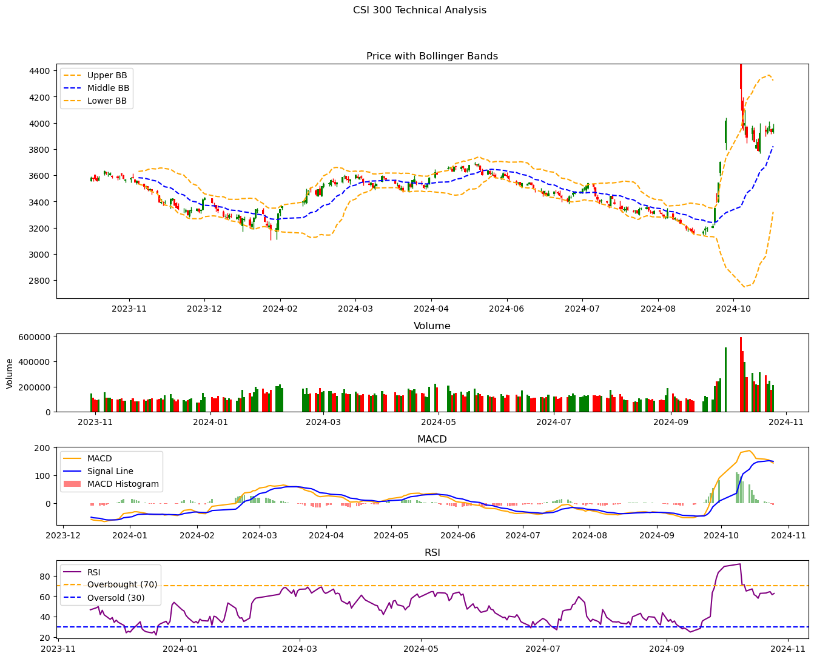

Currency..Quarter USD EUR JPY GBP CAD RMB AUD CHF
1 Q1 2019 6,727.09 2,208.79 584.63 495.70 208.64 212.26 181.95 15.27
2 Q2 2019 6,752.28 2,264.88 611.87 497.41 209.85 212.80 186.71 15.53
3 Q3 2019 6,728.85 2,212.74 612.75 492.22 205.44 213.83 182.48 16.20
4 Q4 2019 6,674.83 2,279.30 631.00 511.51 206.71 215.81 187.18 17.36
5 Q1 2020 6,794.91 2,197.30 624.97 486.08 195.13 221.48 170.16 16.05
6 Q2 2020 6,902.01 2,272.44 643.70 504.36 215.47 233.68 190.34 17.22
7 Q3 2020 6,927.16 2,359.61 668.19 523.64 231.10 247.44 199.51 19.30
8 Q4 2020 6,990.97 2,526.41 715.35 561.39 246.57 271.60 216.87 20.74
9 Q1 2021 6,971.79 2,404.80 686.30 554.28 250.01 293.32 214.89 19.44
10 Q2 2021 7,070.33 2,458.88 672.20 560.90 270.01 314.81 218.44 23.13
11 Q3 2021 7,087.77 2,462.44 681.42 561.66 264.29 320.15 214.26 23.77
12 Q4 2021 7,087.14 2,486.88 671.77 576.22 286.93 336.10 218.02 24.51
13 Q1 2022 6,868.97 2,328.35 626.44 569.45 286.02 330.03 221.91 29.48
14 Q2 2022 6,645.02 2,187.63 572.65 538.73 275.75 308.22 209.14 27.63
15 Q3 2022 6,426.89 2,086.40 560.11 489.95 260.92 281.12 204.78 24.78
16 Q4 2022 6,460.21 2,252.06 608.17 543.11 262.62 287.81 217.08 25.31
17 Q1 2023 6,630.89 2,186.33 610.39 605.02 270.60 287.12 221.62 28.26
18 Q2 2023 6,641.89 2,207.25 597.15 533.64 278.51 272.99 219.70 21.26
19 Q3 2023 6,497.94 2,150.47 598.73 530.36 274.36 260.12 222.35 20.30
OtherCurrencies UnallocatedReserves Total
1 263.50 712.93 11,610.77
2 270.56 715.88 11,737.76
3 262.92 729.40 11,656.82
4 281.50 749.55 11,824.74
5 255.53 770.32 11,731.94
6 278.67 754.11 12,011.98
7 283.16 787.44 12,246.56
8 314.63 841.14 12,705.67
9 335.82 851.50 12,582.14
10 357.57 865.83 12,812.12
11 354.77 860.67 12,831.20
12 362.96 886.73 12,937.27
13 387.80 858.65 12,507.09
14 358.62 858.26 11,981.65
15 358.59 841.74 11,535.29
16 383.64 877.79 11,917.81
17 389.07 877.53 12,029.03
18 403.72 887.06 12,055.26
19 426.63 920.27 11,901.53Assignment 4
Second Table of Federal Reserve Wikipedia
Index Comparison
